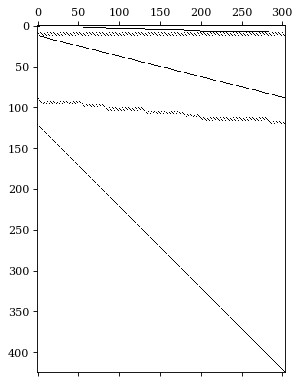
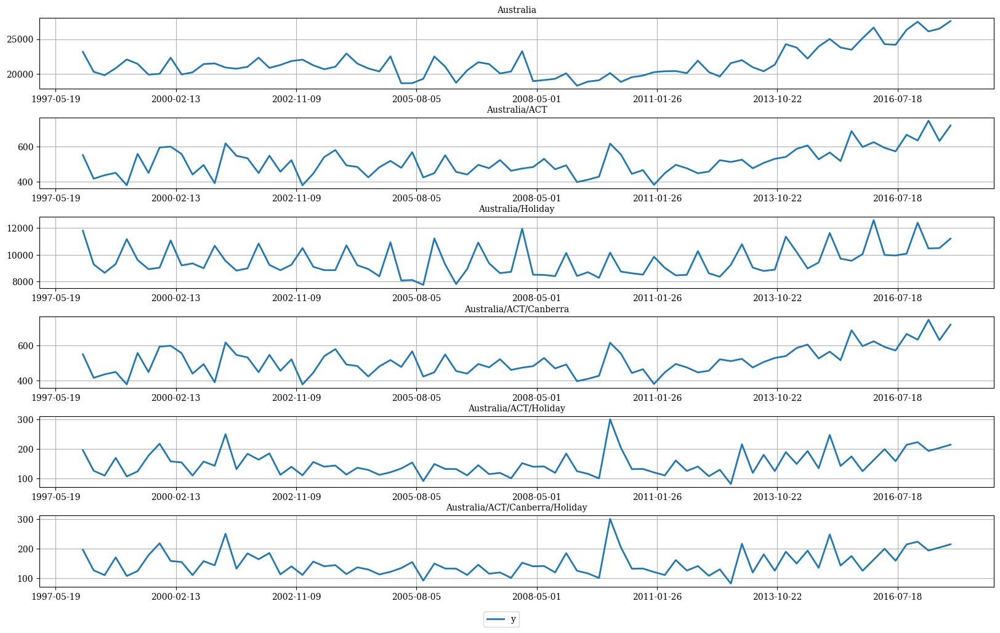
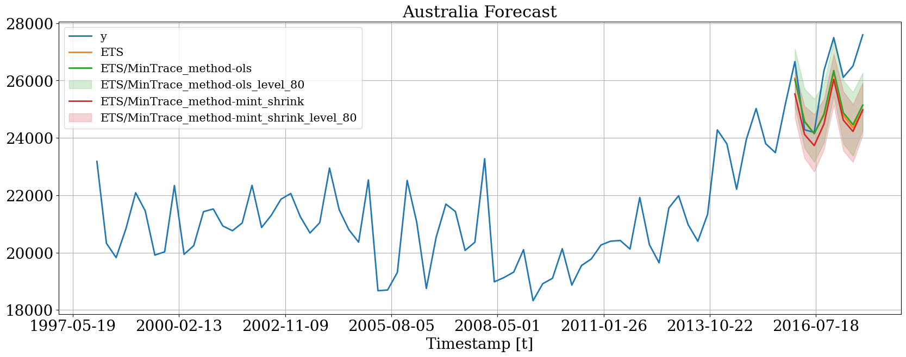
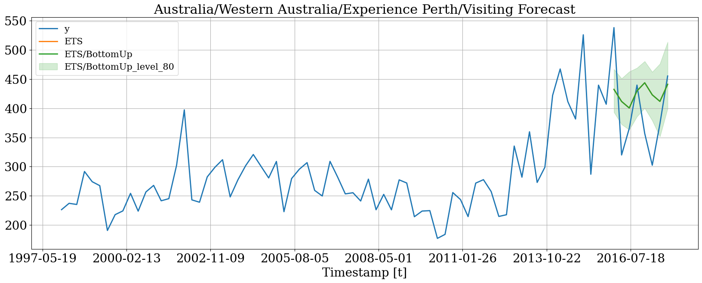
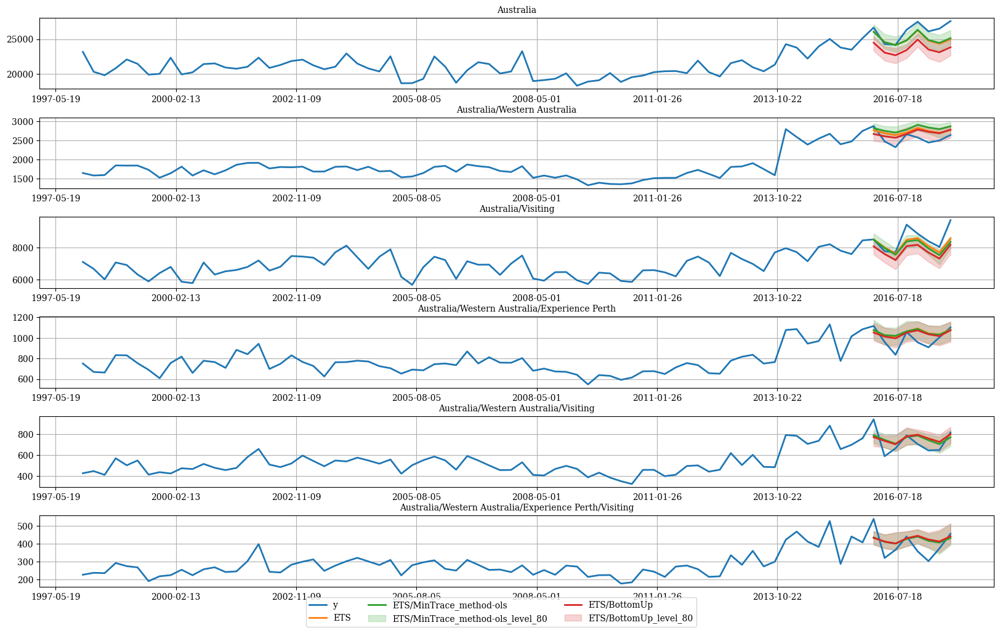
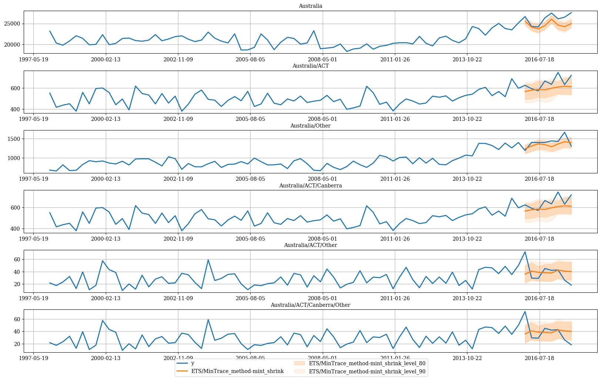

!pip install hierarchicalforecast statsforecastBootstrap

In many cases, only the time series at the lowest level of the hierarchies (bottom time series) are available. HierarchicalForecast has tools to create time series for all hierarchies and also allows you to calculate prediction intervals for all hierarchies. In this notebook we will see how to do it.
import numpy as np
import pandas as pd
import matplotlib.pyplot as plt
# compute base forecast no coherent
from statsforecast.models import ETS, Naive
from statsforecast.core import StatsForecast
#obtain hierarchical reconciliation methods and evaluation
from hierarchicalforecast.methods import BottomUp, MinTrace
from hierarchicalforecast.utils import aggregate, HierarchicalPlot
from hierarchicalforecast.core import HierarchicalReconciliation
from hierarchicalforecast.evaluation import HierarchicalEvaluation/Users/fedex/miniconda3/envs/hierarchicalforecast/lib/python3.10/site-packages/statsforecast/core.py:21: TqdmWarning: IProgress not found. Please update jupyter and ipywidgets. See https://ipywidgets.readthedocs.io/en/stable/user_install.html
from tqdm.autonotebook import tqdmAggregate bottom time series
In this example we will use the Tourism dataset from the Forecasting: Principles and Practice book. The dataset only contains the time series at the lowest level, so we need to create the time series for all hierarchies.
Y_df = pd.read_csv('https://raw.githubusercontent.com/Nixtla/transfer-learning-time-series/main/datasets/tourism.csv')
Y_df = Y_df.rename({'Trips': 'y', 'Quarter': 'ds'}, axis=1)
Y_df.insert(0, 'Country', 'Australia')
Y_df = Y_df[['Country', 'Region', 'State', 'Purpose', 'ds', 'y']]
Y_df['ds'] = Y_df['ds'].str.replace(r'(\d+) (Q\d)', r'\1-\2', regex=True)
Y_df['ds'] = pd.to_datetime(Y_df['ds'])
Y_df.head()| Country | Region | State | Purpose | ds | y | |
|---|---|---|---|---|---|---|
| 0 | Australia | Adelaide | South Australia | Business | 1998-01-01 | 135.077690 |
| 1 | Australia | Adelaide | South Australia | Business | 1998-04-01 | 109.987316 |
| 2 | Australia | Adelaide | South Australia | Business | 1998-07-01 | 166.034687 |
| 3 | Australia | Adelaide | South Australia | Business | 1998-10-01 | 127.160464 |
| 4 | Australia | Adelaide | South Australia | Business | 1999-01-01 | 137.448533 |
The dataset can be grouped in the following non-strictly hierarchical structure.
spec = [
['Country'],
['Country', 'State'],
['Country', 'Purpose'],
['Country', 'State', 'Region'],
['Country', 'State', 'Purpose'],
['Country', 'State', 'Region', 'Purpose']
]Using the aggregate function from HierarchicalForecast we can generate: 1. Y_df: the hierarchical structured series \(\mathbf{y}_{[a,b]\tau}\) 2. S_df: the aggregation constraings dataframe with \(S_{[a,b]}\) 3. tags: a list with the ‘unique_ids’ conforming each aggregation level.
Y_df, S_df, tags = aggregate(df=Y_df, spec=spec)
Y_df = Y_df.reset_index()/Users/fedex/miniconda3/envs/hierarchicalforecast/lib/python3.10/site-packages/sklearn/preprocessing/_encoders.py:828: FutureWarning: `sparse` was renamed to `sparse_output` in version 1.2 and will be removed in 1.4. `sparse_output` is ignored unless you leave `sparse` to its default value.
warnings.warn(Y_df.head()| unique_id | ds | y | |
|---|---|---|---|
| 0 | Australia | 1998-01-01 | 23182.197269 |
| 1 | Australia | 1998-04-01 | 20323.380067 |
| 2 | Australia | 1998-07-01 | 19826.640511 |
| 3 | Australia | 1998-10-01 | 20830.129891 |
| 4 | Australia | 1999-01-01 | 22087.353380 |
S_df.iloc[:5, :5]| Australia/ACT/Canberra/Business | Australia/ACT/Canberra/Holiday | Australia/ACT/Canberra/Other | Australia/ACT/Canberra/Visiting | Australia/New South Wales/Blue Mountains/Business | |
|---|---|---|---|---|---|
| Australia | 1.0 | 1.0 | 1.0 | 1.0 | 1.0 |
| Australia/ACT | 1.0 | 1.0 | 1.0 | 1.0 | 0.0 |
| Australia/New South Wales | 0.0 | 0.0 | 0.0 | 0.0 | 1.0 |
| Australia/Northern Territory | 0.0 | 0.0 | 0.0 | 0.0 | 0.0 |
| Australia/Queensland | 0.0 | 0.0 | 0.0 | 0.0 | 0.0 |
tags['Country/Purpose']array(['Australia/Business', 'Australia/Holiday', 'Australia/Other',
'Australia/Visiting'], dtype=object)We can visualize the S_df dataframe and Y_df using the HierarchicalPlot class as follows.
hplot = HierarchicalPlot(S=S_df, tags=tags)hplot.plot_summing_matrix()
hplot.plot_hierarchically_linked_series(
bottom_series='Australia/ACT/Canberra/Holiday',
Y_df=Y_df.set_index('unique_id')
)
Split Train/Test sets
We use the final two years (8 quarters) as test set.
Y_test_df = Y_df.groupby('unique_id').tail(8)
Y_train_df = Y_df.drop(Y_test_df.index)Y_test_df = Y_test_df.set_index('unique_id')
Y_train_df = Y_train_df.set_index('unique_id')Y_train_df.groupby('unique_id').size()unique_id
Australia 72
Australia/ACT 72
Australia/ACT/Business 72
Australia/ACT/Canberra 72
Australia/ACT/Canberra/Business 72
..
Australia/Western Australia/Experience Perth/Other 72
Australia/Western Australia/Experience Perth/Visiting 72
Australia/Western Australia/Holiday 72
Australia/Western Australia/Other 72
Australia/Western Australia/Visiting 72
Length: 425, dtype: int64Computing Base Forecasts
The following cell computes the base forecasts for each time series in Y_df using the AutoETS and model. Observe that Y_hat_df contains the forecasts but they are not coherent. Since we are computing prediction intervals using bootstrapping, we only need the fitted values of the models.
fcst = StatsForecast(df=Y_train_df,
models=[ETS(season_length=4, model='ZAA')],
freq='QS', n_jobs=-1)
Y_hat_df = fcst.forecast(h=8, fitted=True)
Y_fitted_df = fcst.forecast_fitted_values()/Users/fedex/miniconda3/envs/hierarchicalforecast/lib/python3.10/site-packages/statsforecast/models.py:526: FutureWarning: `ETS` will be deprecated in future versions of `StatsForecast`. Please use `AutoETS` instead.
ETS._warn()Reconcile Base Forecasts
The following cell makes the previous forecasts coherent using the HierarchicalReconciliation class. Since the hierarchy structure is not strict, we can’t use methods such as TopDown or MiddleOut. In this example we use BottomUp and MinTrace. If you want to calculate prediction intervals, you have to use the level argument as follows and set intervals_method='bootstrap'.
reconcilers = [
BottomUp(),
MinTrace(method='mint_shrink'),
MinTrace(method='ols')
]
hrec = HierarchicalReconciliation(reconcilers=reconcilers)
Y_rec_df = hrec.reconcile(Y_hat_df=Y_hat_df, Y_df=Y_fitted_df, S=S_df,
tags=tags, level=[80, 90],
intervals_method='bootstrap')The dataframe Y_rec_df contains the reconciled forecasts.
Y_rec_df.head()| ds | ETS | ETS/BottomUp | ETS/BottomUp-lo-90 | ETS/BottomUp-lo-80 | ETS/BottomUp-hi-80 | ETS/BottomUp-hi-90 | ETS/MinTrace_method-mint_shrink | ETS/MinTrace_method-mint_shrink-lo-90 | ETS/MinTrace_method-mint_shrink-lo-80 | ETS/MinTrace_method-mint_shrink-hi-80 | ETS/MinTrace_method-mint_shrink-hi-90 | ETS/MinTrace_method-ols | ETS/MinTrace_method-ols-lo-90 | ETS/MinTrace_method-ols-lo-80 | ETS/MinTrace_method-ols-hi-80 | ETS/MinTrace_method-ols-hi-90 | |
|---|---|---|---|---|---|---|---|---|---|---|---|---|---|---|---|---|---|
| unique_id | |||||||||||||||||
| Australia | 2016-01-01 | 26080.878906 | 24487.349609 | 23244.120996 | 23333.694727 | 25381.792969 | 25426.333984 | 25532.523559 | 24428.911701 | 24709.210638 | 26365.606934 | 26476.255501 | 26034.114241 | 24914.136375 | 25100.462938 | 27102.735022 | 27176.416922 |
| Australia | 2016-04-01 | 24587.011719 | 23069.744141 | 21826.519434 | 21912.962891 | 23946.606250 | 24281.447266 | 24118.557177 | 23199.968626 | 23295.244252 | 25108.470410 | 25489.383606 | 24567.460995 | 23484.050568 | 23640.638423 | 25709.763678 | 25809.249492 |
| Australia | 2016-07-01 | 24147.308594 | 22689.777344 | 21297.136719 | 21530.438281 | 23701.173828 | 24155.820312 | 23731.251387 | 22627.639669 | 22818.729182 | 24821.488458 | 25246.867432 | 24150.134898 | 23030.156834 | 23155.025556 | 25359.992376 | 25404.841402 |
| Australia | 2016-10-01 | 24794.041016 | 23429.757812 | 22037.123047 | 22276.453125 | 24241.417969 | 24441.160156 | 24486.549344 | 23385.927232 | 23600.704525 | 25353.555625 | 25481.478557 | 24831.584516 | 23725.924464 | 23836.475174 | 25900.205254 | 25977.265089 |
| Australia | 2017-01-01 | 26284.000000 | 24940.042969 | 23696.722754 | 23904.382812 | 25814.941406 | 25974.169922 | 26041.867488 | 24972.077858 | 25158.986710 | 26918.104747 | 27135.580845 | 26348.203335 | 25254.659324 | 25487.502291 | 27410.873035 | 27477.334507 |
Plot Predictions
Then we can plot the probabilist forecasts using the following function.
plot_df = pd.concat([Y_df.set_index(['unique_id', 'ds']),
Y_rec_df.set_index('ds', append=True)], axis=1)
plot_df = plot_df.reset_index('ds')Plot single time series
hplot.plot_series(
series='Australia',
Y_df=plot_df,
models=['y', 'ETS', 'ETS/MinTrace_method-ols', 'ETS/MinTrace_method-mint_shrink'],
level=[80]
)
# Since we are plotting a bottom time series
# the probabilistic and mean forecasts
# differ due to bootstrapping
hplot.plot_series(
series='Australia/Western Australia/Experience Perth/Visiting',
Y_df=plot_df,
models=['y', 'ETS', 'ETS/BottomUp'],
level=[80]
)
Plot hierarchichally linked time series
hplot.plot_hierarchically_linked_series(
bottom_series='Australia/Western Australia/Experience Perth/Visiting',
Y_df=plot_df,
models=['y', 'ETS', 'ETS/MinTrace_method-ols', 'ETS/BottomUp'],
level=[80]
)
# ACT only has Canberra
hplot.plot_hierarchically_linked_series(
bottom_series='Australia/ACT/Canberra/Other',
Y_df=plot_df,
models=['y', 'ETS/MinTrace_method-mint_shrink'],
level=[80, 90]
)
References
- Hyndman, R.J., & Athanasopoulos, G. (2021). “Forecasting: principles and practice, 3rd edition: Chapter 11: Forecasting hierarchical and grouped series.”. OTexts: Melbourne, Australia. OTexts.com/fpp3 Accessed on July 2022.
- Shanika L. Wickramasuriya, George Athanasopoulos, and Rob J. Hyndman. Optimal forecast reconciliation for hierarchical and grouped time series through trace minimization.Journal of the American Statistical Association, 114(526):804–819, 2019. doi: 10.1080/01621459.2018.1448825. URL https://robjhyndman.com/publications/mint/.
- Puwasala Gamakumara Ph. D. dissertation. Monash University, Econometrics and Business Statistics (2020). “Probabilistic Forecast Reconciliation”
If you find the code useful, please ⭐ us on Github